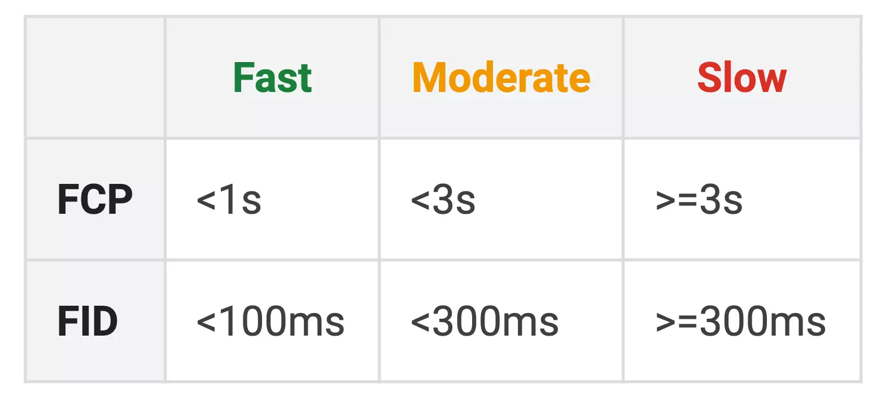

Web
Web-продукты
- Web-приложения (React, Vue, Angular)
- Web-cайты, интернет-магазины, CMS
- Desktop-приложения на Electron
- Email-рассылки
Web-приложение — клиент-серверное приложение, в котором клиентом выступает в основном браузер, а сервером — web-сервер. Логика веб-приложения распределена между сервером и клиентом, хранение данных осуществляется преимущественно на сервере, обмен информацией происходит по сети.
Вы можете смотреть онлайн-трансляции, фильмы, строить графики и даже играть в 3D-игры в браузере. Можете написать приложение один раз и запускать его везде: на мобильных устройствах, в вебе, да хоть на часах.
Frontend
- хранение и доступ к статическому контенту (файлы стилей, скрипты),
- генерация и отображение пользовательского интерфейса,
- взаимодействие с пользователем и выполнение запросов к API,
- обновление пользовательского интерфейса в ответ на действия пользователя.
Backend
- реализация публичного API,
- хранение данных в базе данных и работа с ними.
Что нужно тестировать
- Кроссбраузерность (Chrome, Safari, Edge, Firefox и др.)
- Кросплатформенноcть (Windows, Linux, MacOS, iOS и др.)
- Презентационный слой: Дизайн, Интерфейс, Адаптивность, Юзабилити и т.д.
- Бизнес-логику: API, методы, основное функциональное тестирование
- Верстку: На адаптивность и переполнение контента
Критерии оптимизированной веб-страницы
- Время загрузки сайта
- Работа сайта без js
- Прогрессивное улучшение
- Количество запросов к серверу
- Отказ от большого количества библиотек
- Шрифты и изображения - самые тяжёлые ресурсы (можно использовать тег picture)
- Нужно ли загружать кастомные шрифты? (Есть же много системных)
- Не стоит грузить шрифты, анимации, тяжелые картинки на mobile вообще (делаем @media на @font-face)
- Оптимизация изображений. SVG вместо png для декорирования. Встроенный в html svg-спрайт
- Минификация и конкатинация js и css
- Critical CSS & Load CSS (встроенный css в html для первых 1000px высоты страницы)
- Google page speed, GT-Metrix
- Web page test (speed index около 1000 это круто)
- Кеширование и Storage
- Отстутствие ошибок в консоли и валидный код.
Google page speed
Google тестирует новые данные про скорость загрузки в Search Console. Экспериментальный раздел называется Speed (experimental).

FCP (First contentful paint) — в русской версии PageSpeed этот показатель переведен как «Первая отрисовка контента».
FCP <1s— быстрая скорость, если ваш сайт загружается меньше одной секунды. 99,9% сайтов загружаются дольше одной секунды, включая сайт Google по замеру из PageSpeed.FCP <3s— умеренная скорость, если ваш сайт загружается меньше трех секунд.FCP >3s— медленная скорость загрузки сайта, если ваш сайт загружается дольше трех секунд.
Почему FCP так важен? Именно по скорости отображения первого контента, при загрузке сайта, пользователь понимает, что сайт работает. Про второй показатель FID
First Input Delay (FID) — в русской версии PageSpeed этот показатель переведен как «Максимально потенциальная задержка после первого ввода».
Простыми словами, это то время задержки между действием пользователя и ответом от сайта. Замечали когда-нибудь, как сайт тормозит при прокрутке страницы вниз? Или бывает, что открыв страницу хочешь кликнуть на кнопку, а срабатывает она только через пару секунд.
Визуально сайт загрузился, но он не готов к работе.
<100 ms- быстро, если меньше сотни миллисекунд.<300 ms— умеренно.>=300 ms— медленно.
Google: почему скорость загрузки ва�жна
Чем дольше скорость загрузки страницы, тем сильнее это влияет на показатели отказов, например:
- если скорость загрузки замедлить с 1 секунды до 3, то показатель отказов вырастет на 32%;
- если скорость загрузки замедлить с 1 до 6 секунд, то показатель вырастет на 106%;
- страницы, помеченные как медленные, могут быть понижены в поиске Google.
Тестирование адаптивности
-
Responsively - Программа по тестированию адаптивности
-
DevTools - Тестирование через эмулятор устройств в инструментах разработчика
-
Responsive design - Реализация резинового/гибкого дизайна, который автоматически подстраивается под размер экрана (без скачков)
-
Adaptive design - Реализация адаптивного дизайна через явные брейкпоинты (видны скачки размеров основных контейнеров по ширине при ресайзе страницы)
Онлайн-сервисы для тестирования web-приложений
- validator.w3.org - Валидатор HTML
- PageSpeed Insights - Оптимизация/скорость загрузки
- Webpagetest - Оптимизация
- dynatrace - Оптимизация
- Caniuse - Актуальность html/css
- Statcounter - Статистика браузе�ров и ОС
- thinkwithgoogle - Скорость загрузки на Mobile
- yesviz - Экраны/viewport устройств
- temp-email - Временная почта
- PlaceIMG - Генератор картинок
- What is My Ip - Узнать свой IP
- Test UFO - Тест частоты дисплея
Плагины для браузеров
Chrome
- Wappalyzer - Мониторинг технологий
- GraphQL Network Inspector - Тестирование GraphQL
- Font Ninja - Мониторинг шрифтов
- Pix to pix - Тестирование дизайна
- Fake Filler - Заполнитель форм
- Fake Data - Заполнитель форм
Firefox
- Easy XSS - Проверка безопасности
Cтатистика (statcounter - РФ 2022)
Desktop OS
- Windons - 88%
- MacOS - 5%
- Linux - 2% (по сути можно принебречь)
Desktop Browsers
- Chrome - 52%
- Yandex - 21%
- Opera - 10%
- Firefox - 8%
- Edge - 5%
- Safari - 3%
Tablet Browsers
- Chrome - 41%
- Android - 23%
- Safari - 19%
- Yandex - 12%
- Opera - 3%
Mobile Browsers
- Chrome - 58%
- Safari - 27%
- Yandex - 9%
- Samsung - 2,6% (можно принебречь)
- Opera - 1,9% (можно принебречь)
Bug-report должен включать
- На каком тестовом с�ервере воспроизводится баг
- Тип устройства, версия ОС, браузер
- Приложить скриншоты или видеозапись